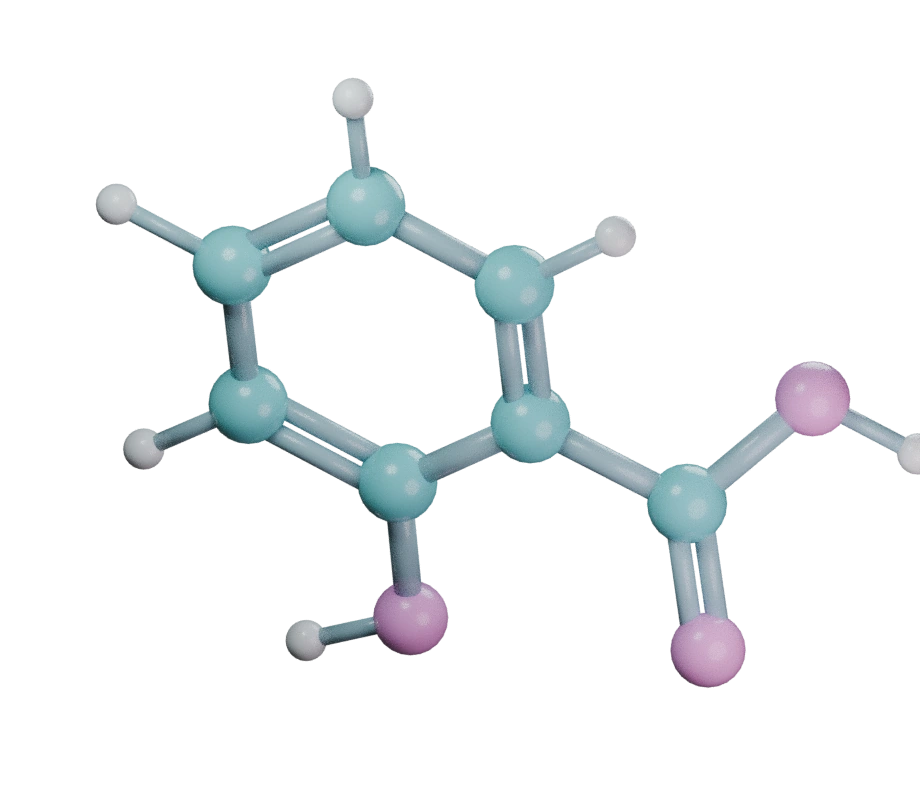

Que montre la structure ?
Compare la niacinamide, la glycérine et l’acide salicylique. Les modèles rendent visibles leurs groupes chimiques et la disposition de leurs atomes.
Comparer dans l’atelierPremier domaine d’application
Une formule commence par des choix d’ingrédients. La modélisation aide à examiner leurs structures, à comparer des propriétés et à formuler des hypothèses pour les essais.
Voir l’acide salicylique en 3D
Trois questions pour passer de la structure à une hypothèse à vérifier.
Compare la niacinamide, la glycérine et l’acide salicylique. Les modèles rendent visibles leurs groupes chimiques et la disposition de leurs atomes.
Comparer dans l’atelierLe pH, la concentration, le véhicule et la stabilité peuvent influencer le comportement d’un ingrédient dans le produit fini. Ces paramètres se vérifient avec des essais adaptés à la formulation.
Les allégations cosmétiques reposent sur des preuves adaptées au produit et au bénéfice annoncé. CosIng documente les ingrédients et leurs dénominations européennes.
Consulter CosIngÉtude de cas
Nous utilisons cette enzyme humaine comme premier terrain de validation des calculs de docking. Des travaux sur la peau humaine irradiée par les UV éclairent son rôle dans la dégradation du collagène.
Explorer le projet